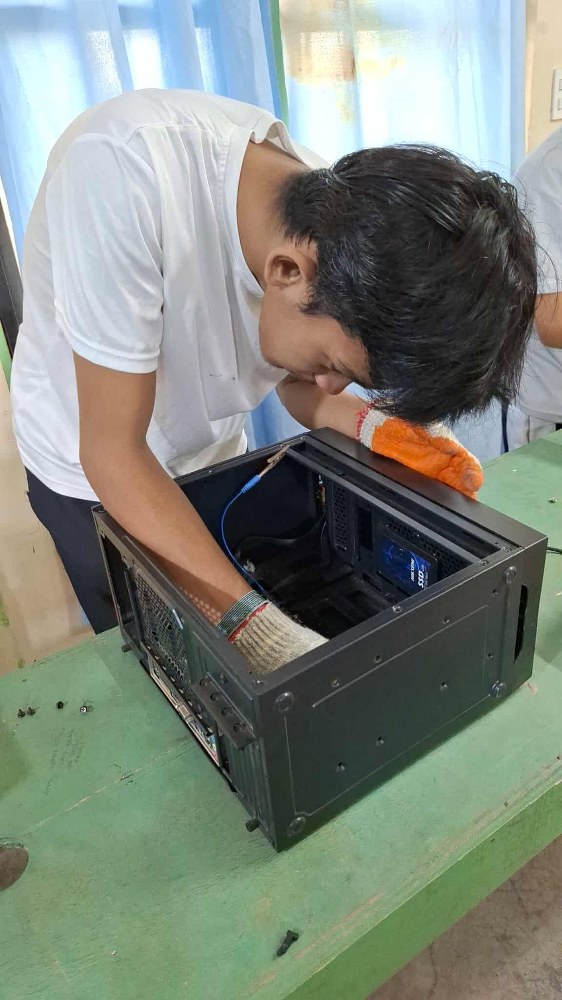
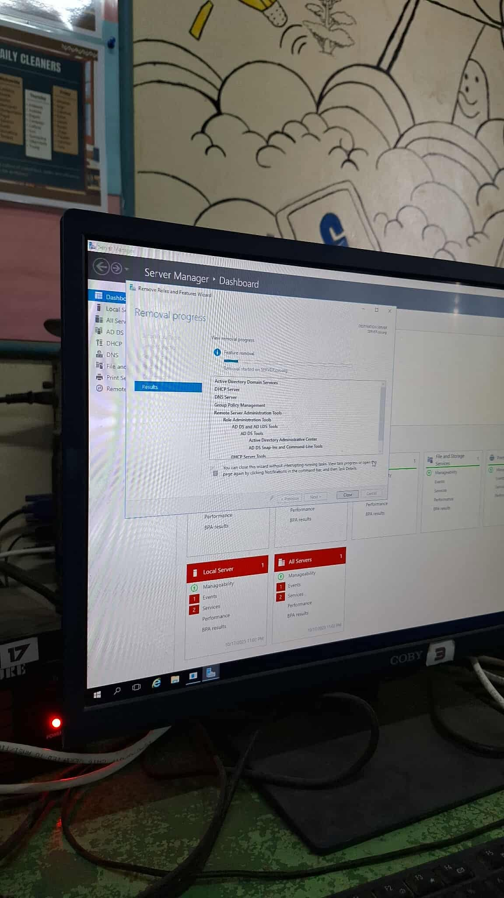
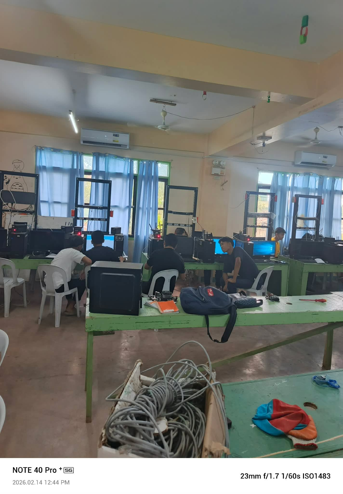

WELCOME TO MY PORTFOLIO
I am a first-year Bachelor of Science in Information Technology student who enjoys learning about computers, programming, and web development. I am always willing to learn new things and improve my skills.
More About MeGET TO KNOW ME
I am a BSIT student from Cordova Public College, and I really enjoy learning about technology and how IT systems work. I believe technology plays an important role in today's generation because we use it in our daily lives. I am continuing to learn more about technology, programming, and computers to improve my skills.
WHAT I AM LEARNING
Learning how to structure web pages.
Learning how to design and style websites.
Learning basic programming and problem solving.
Exploring interactive website development.
MY SCHOOL ACTIVITIES
A personal website created using HTML and CSS to introduce myself and show my skills.
HTML / CSSA simple program that calculates a student's average grade and displays the result.
C ProgrammingA basic webpage design with username and password fields using HTML and CSS.
HTML / CSS
A hands-on activity where I opened a desktop computer and checked its internal parts while practicing proper handling.
Computer Hardware
A practice activity using Server Manager to manage server roles and features.
Windows Server
A classroom hands-on activity involving computer workstations and basic equipment setup.
Computer SystemsMY ACADEMIC BACKGROUND
First-Year College Student
Currently learning programming, computer systems, and web development.
LET'S CONNECT
Thank you for visiting my portfolio! Feel free to contact me using the details below.
Email: saiixyen@gmail.com
Number: 09532484616